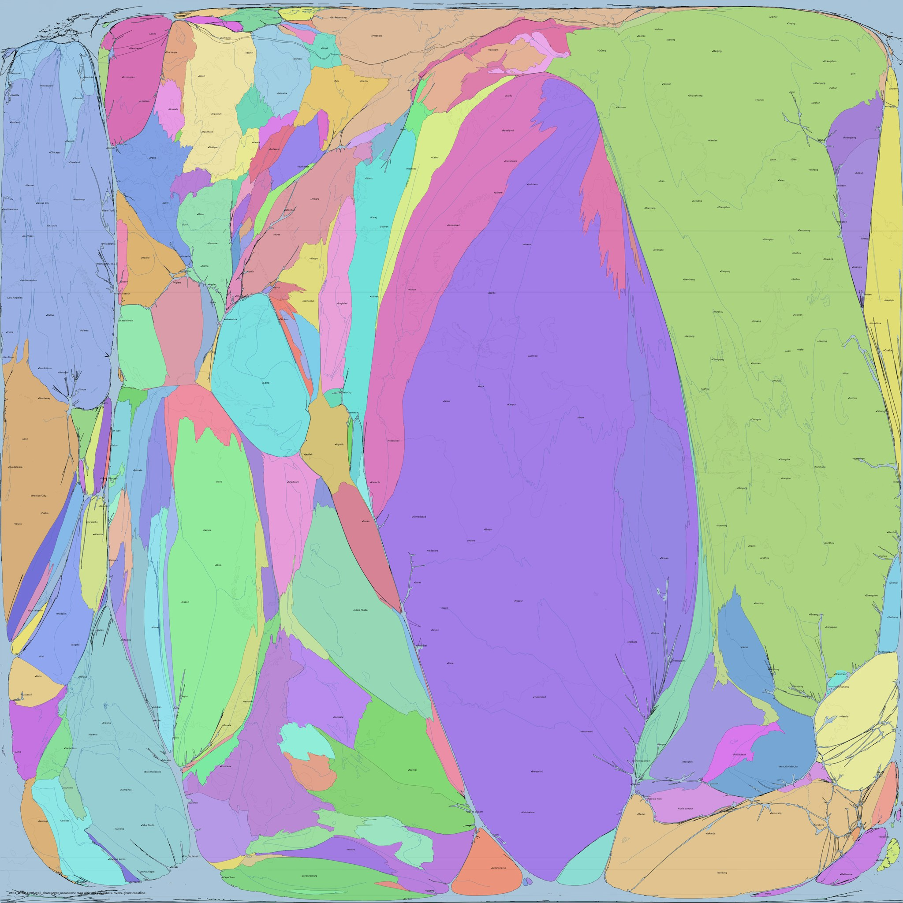
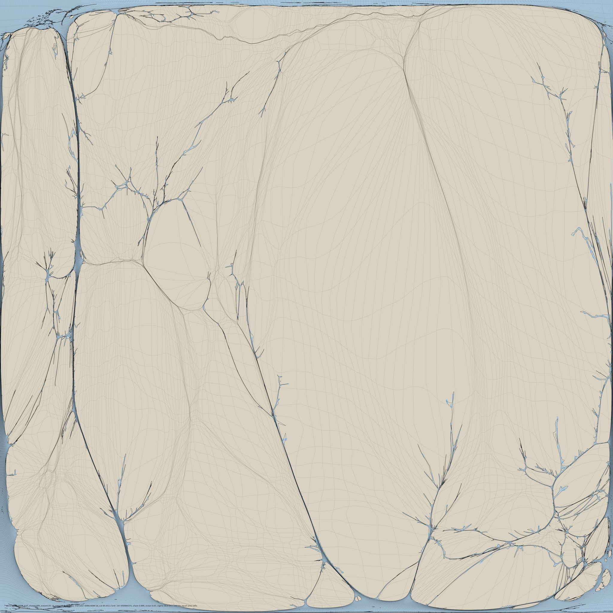
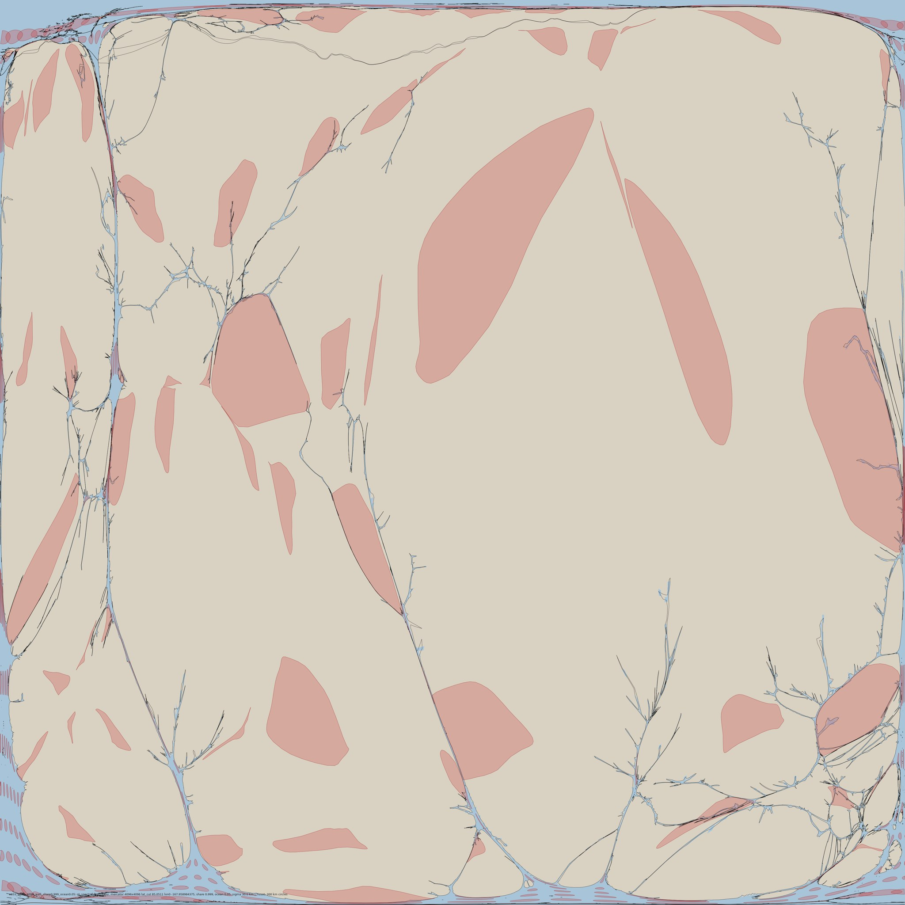
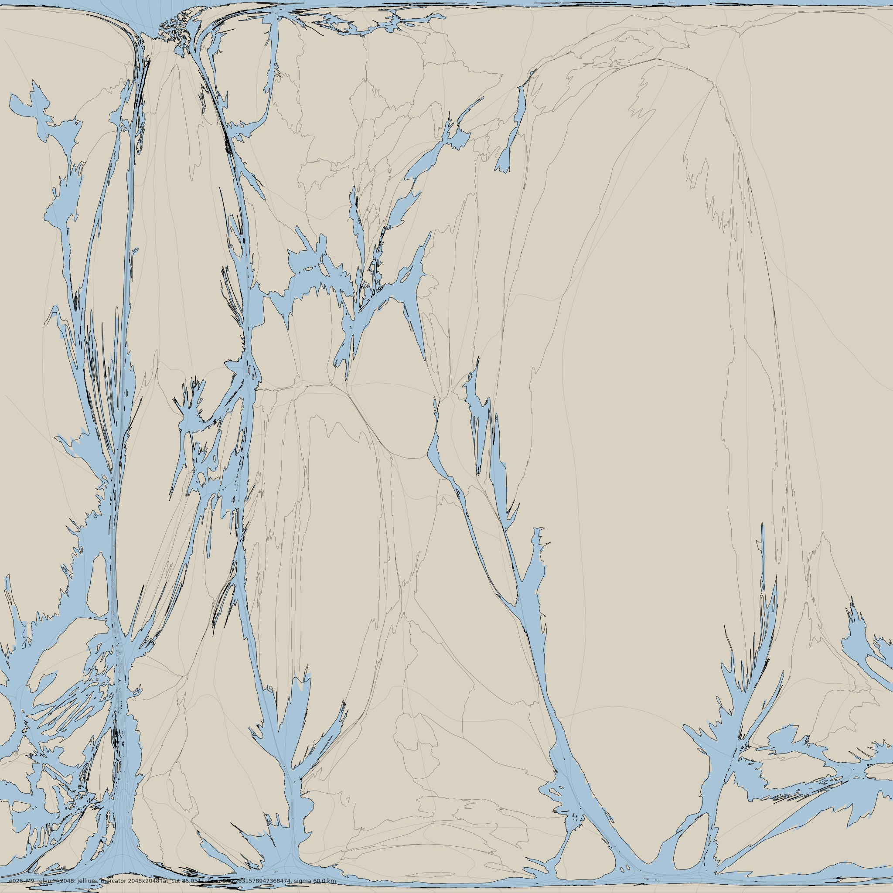
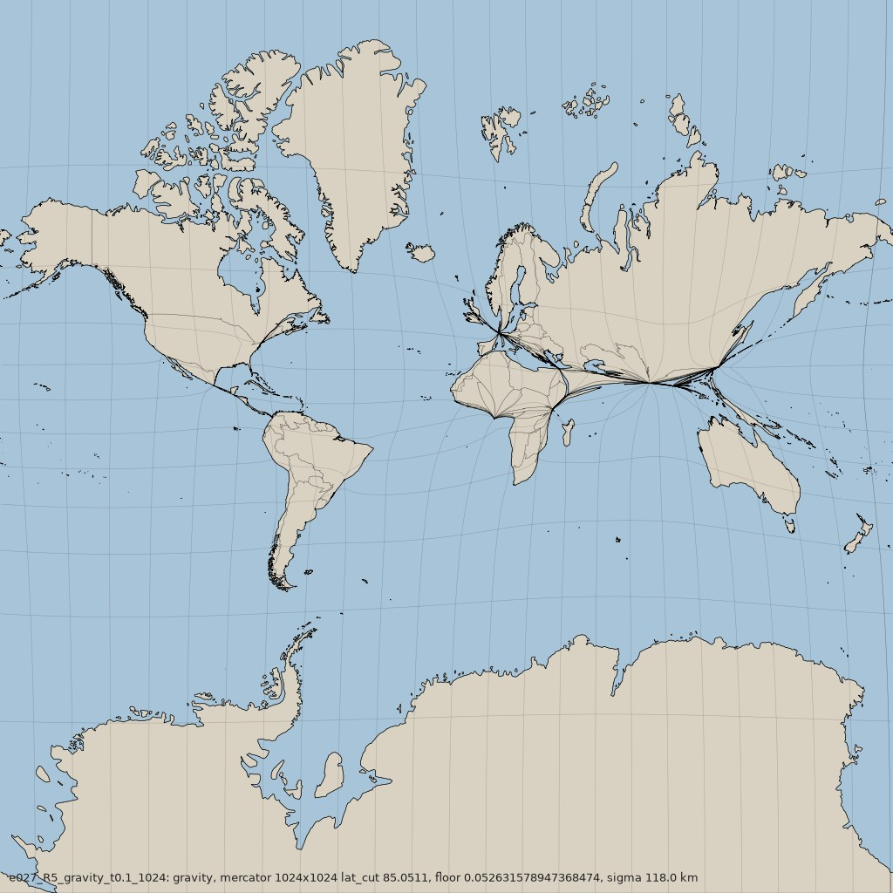

A map of the Earth in which area is people: every square centimetre holds the same number of human beings. Built from the finest complete population raster (GHS-POP, 100 m), by optimal transport, so nothing rotates and everything moves as little as it can. Land is pure; the ocean keeps 5% of the frame so you can see where the Atlantic went. The unit of length is the humeter: 1 hm is 1 km at the world-average density, about 16 people per km².
Dense places feel full and big; empty places seem vast but feel empty and small. This is that feeling, drawn.

Zoom and pan the flat frame down to the 100 m settlement texture, or spin the globe (sphere area = people; the slider morphs geography into the cartogram). Then play it through time: every HYDE epoch from 10,000 BC to 2023.


Three ways to flatten the same manifold. Diffusion melts; population as repelling mass comes close; optimal transport keeps every coastline's orientation (its twist is exactly zero) and moves things least.


Population: GHS-POP R2023A (JRC), 2025 epoch, census counts disaggregated onto satellite-detected buildings. History: HYDE 3.3 (Utrecht University), modelled before 1950 from regional estimates. Lights: NASA Black Marble 2016. Roads: GRIP4 (CC0). GDP: Kummu et al. 2018 (CC0). Borders and coasts: Natural Earth. Every picture on this site states its source and whether it is observed, modelled or interpolated. Code and every experiment: github.com/philippbogdan/historical-cartogram.